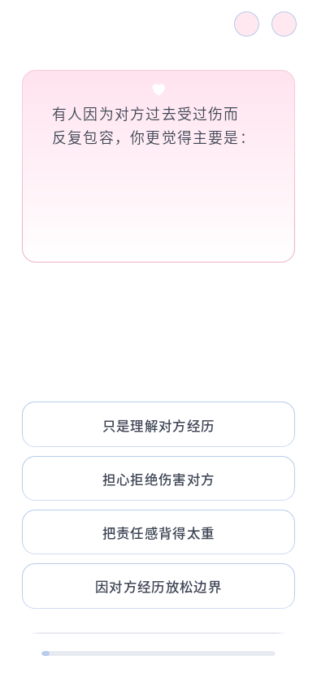
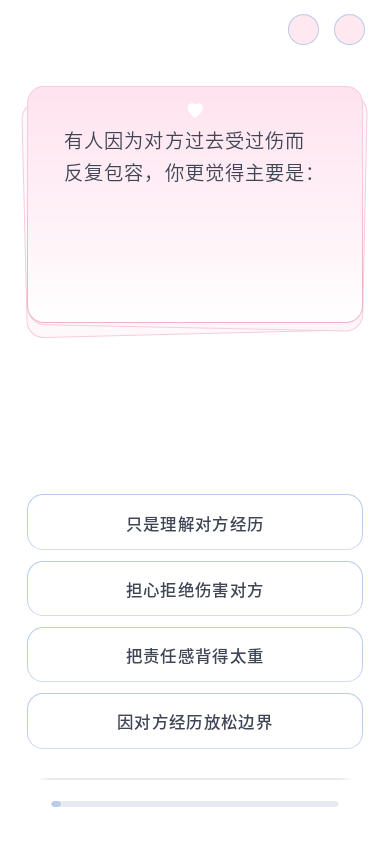

题干字号 +8%，实际字距 −10%；选项字重 +5%。所有横竖屏使用同一组调整系数，保留当前卡片层叠、内宽与自然换行。
已验证 10 个视口 × 96 道题：文字完整、左对齐、卡片边界、进度可达、重复 resize 稳定。200% 字体放大下 C10、C24、C02、A21 与选答动画也通过。题目源 Markdown、运行 JSON 和控制脚本未改。


C24 修改后截图 · 布局验证数据 · 放大字体验证数据